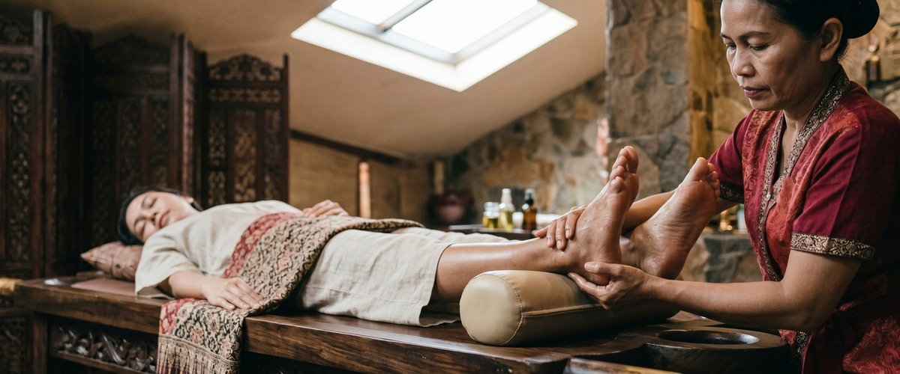
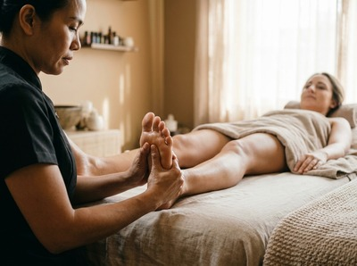
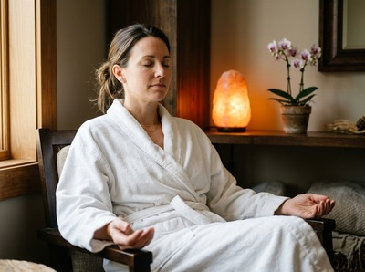

If your feet ache, your energy feels low, or tension has built up across your whole body, Thai reflexology at Thai Massage Greenock offers a targeted and deeply restorative treatment.

Thai reflexology in Greenock draws on over 2,000 years of traditional Thai healing. It uses precise pressure on the feet and lower legs to boost circulation, release blocked energy, and help the whole body unwind.
Thai reflexology blends the energy line work of traditional Thai medicine with ideas from Chinese Tuina, Japanese Shiatsu, and Ayurveda. It works on the principle that specific points on the feet connect to organs and systems throughout the body.
Your therapist uses thumbs, fingers, and a traditional wooden stick to apply rhythmic pressure across the soles, heels, and lower legs. This opens the sen energy lines and clears the tension held within them.

Unlike a simple foot rub, Thai foot reflexology in Greenock also includes gentle stretching of the lower legs and ankles. This leaves you feeling lighter and more balanced from the feet upward.
Thai reflexology suits anyone who carries tension in their lower body or needs a grounding, restorative treatment. It works especially well for people who stand or walk for long periods at work, and for those who sit at a desk for hours and notice poor circulation in their legs.
Anyone dealing with ongoing fatigue or broken sleep will benefit too. If you are curious about Thai massage but prefer not to lie down or move through stretches, reflexology gives you all the same restorative effects in a seated, accessible format.
Your session begins with a brief consultation. This helps your therapist understand what you need most from the treatment.
You remain seated throughout, either in a reclining chair or on a comfortable mat. You will be asked to remove your shoes and socks — no other undressing is needed. Loose, comfortable clothing is ideal so the lower legs are easy to access.

Sessions typically run for 45 to 60 minutes. Pressure is applied in a steady, rhythmic sequence across the feet and lower legs.
Most clients find this deeply relaxing, and it is not uncommon to feel drowsy before the session ends. Afterwards, you may notice a lightness in your legs, a sense of calm, and improved energy that carries through the rest of your day. You can book your Thai reflexology session online to get started.
At Thai Massage Greenock, every treatment is delivered personally by Jariya Malone. Jariya is a certified therapist trained at Bangkok's renowned Wat Po temple.
She keeps detailed notes from every visit and builds each session around what your body needs that day — not a fixed routine. If you want to explore our full range of treatments, you can also find out more about our Thai foot massage and Traditional Thai Massage services.
A regular foot massage focuses on easing soreness and relaxing the muscles of the feet. Thai reflexology goes further. It applies targeted pressure to specific points on the feet and lower legs that connect to organs and systems throughout the body.
The aim is to restore energy flow along the sen lines. It also includes gentle stretching of the ankles and lower legs, making it a more complete treatment than a standard foot rub.
No. You remain fully clothed throughout the session. You will only need to remove your shoes and socks so the therapist can work on your feet and lower legs.
Loose, comfortable trousers or joggers are ideal. They allow easy access to the lower leg without needing to roll fabric too far up.
Sessions at Thai Massage Greenock typically run for 45 to 60 minutes. This allows enough time to work through the full sequence of points on both feet and lower legs without rushing.
If you are unsure which session length suits you, Jariya can advise when you get in touch.
Most clients leave feeling lighter in their legs and calmer overall. It is common to feel a pleasant tiredness right after the session — this is simply your nervous system settling.
Many people also report better sleep on the night of their treatment. Drinking water afterwards helps your body process the effects of the session.
For general wellbeing and stress management, once every two to four weeks works well for most people. If you are dealing with ongoing fatigue, poor circulation, or tension in the lower body, more frequent sessions in the early weeks can help build on each treatment.
Jariya will talk through a schedule that fits your needs at your first appointment.
Absolutely. Thai reflexology is one of the most accessible treatments available. You remain seated and fully clothed throughout, with no unfamiliar positions or stretches to deal with.
That makes it a great first treatment for anyone new to massage therapy. If you have a health condition or concern, please mention it when you book your appointment online so Jariya can tailor the session accordingly.